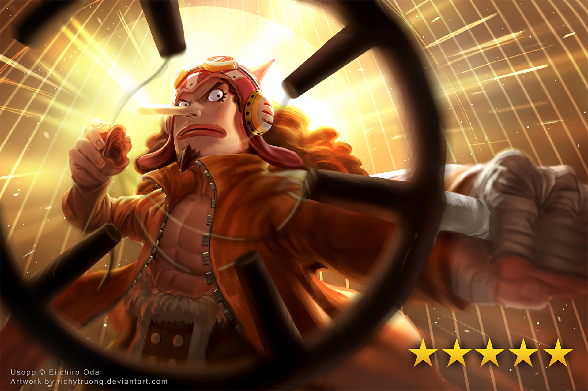
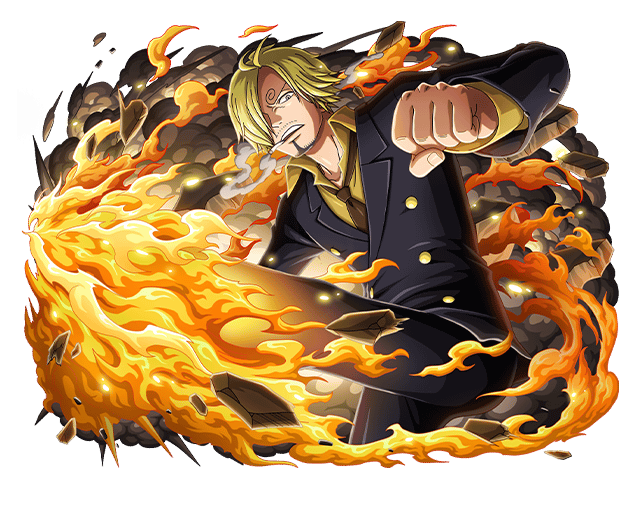
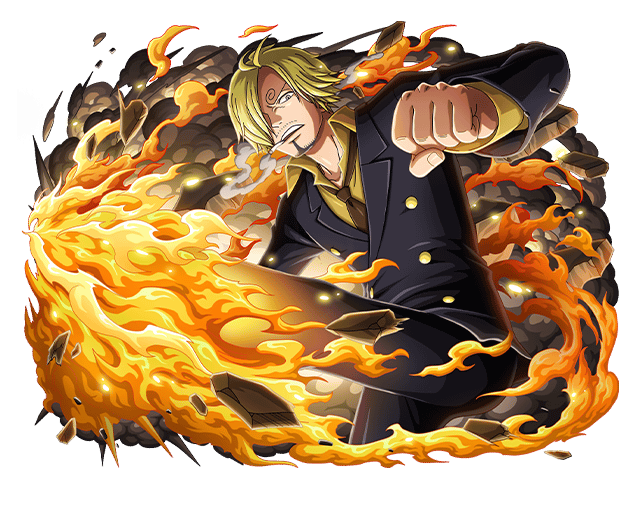

CREW
BAJAK LAUT TOPI JERAMI

Bajak Laut Topi Jerami, juga dikenal sebagai Kru Topi Jerami, atau
hanya Topi Jerami, adalah kru bajak laut yang terkenal dan kuat
yang berasal dari East Blue, tetapi memiliki berbagai anggota dari
berbagai daerah. Mereka adalah fokus utama dan protagonis dari
seri manga dan anime One Piece, dan dipimpin oleh protagonis
utama, Monkey D. Luffy. "Topi Jerami" diberi nama setelah topi
khas Luffy yang diberikan kepadanya oleh Shanks si Rambut Merah,
dan pertama kali disebut sebagai Bajak Laut Topi Jerami oleh
Smoker di Alabasta.

Monkey D. Luffy, juga dikenal sebagai "Topi Jerami Luffy" dan
umumnya sebagai "Topi Jerami", adalah protagonis utama dari manga
dan anime, One Piece. Dia adalah pendiri dan kapten Bajak Laut
Topi Jerami yang semakin terkenal dan kuat, serta salah satu dari
empat petarung top. Impian seumur hidupnya adalah menjadi Raja
Bajak Laut dengan menemukan harta karun legendaris yang
ditinggalkan oleh Raja Bajak Laut yang terlambat, Gol D. Roger.
Dia percaya bahwa menjadi Raja Bajak Laut berarti memiliki
kebebasan terbanyak di dunia. Setelah invasi Totto Land dan
tindakannya melawan Yonko Big Mom, dia saat ini dianggap oleh pers
global untuk menjadi Kaisar Kelima.
Roronoa Zoro juga dikenal sebagai "Pemburu Bajak Laut" Zoro adalah
seorang bajak laut dan ahli pedang dari kelompok Bajak Laut Topi
Jerami dan merupakan salah satu karakter utama dalam cerita One
Piece. Ia adalah orang pertama yang ditawari Monkey D. Luffy untuk
bergabung dengannya. Impiannya adalah menjadi pendekar pedang
nomor satu di dunia dengan mengalahkan Shichibukai Dracule Mihawk.
Nami si "Kucing Pencuri" adalah seorang bajak laut dan navigator
dari kelompok Bajak Laut Topi Jerami. Dia di besarkan di Desa
Cocoyasi di East Blue dan menjadi anggota ketiga kru topi jerami
setelah kekalahan Arlong. Sebelum bergabung, Nami dikenal sebagai
pencuri yang ulung. Impiannya adalah untuk dapat memetakan seluruh
dunia.

Usopp adalah penembak jitu dari Bajak Laut Topi Jerami dan mantan
Kapten dari Bajak Laut Usopp. Ia dilahirkan di Desa Syrup dan
pertama kali disebutkan oleh Yasopp, ayahnya. Meskipun pengecut
yang normal, Usopp bermimpi menjadi seorang pejuang pemberani laut
seperti ayahnya dan hidup setiap hari dalam mengejar hidup sampai
mimpi ini.
"Kaki Hitam" Sanji adalah seorang bajak laut merangkap koki dari
kelompok Bajak Laut Topi Jerami. Ia merupakan anggota kelima yang
bergabung menjadi anggota kru saat kru topi jerami berlabuh di
restoran terapung Baratie. Meski bergabung dan dibesarkan di East
Blue, Sanji aslinya dilahirkan di North Blue sehingga ia adalah
anggota kru topi jerami pertama yang tidak berasal dari East Blue.
Impian Sanji adalah untuk dapat menemukan "All Blue", sebuah
lautan dimana East Blue, West Blue, North Blue dan South Blue
saling bertemu dan menghasilkan bahan-bahan masakan terbaik yang
merupakan surga bagi para koki.
Tony Tony Chopper adalah seorang dokter bajak laut dari kelompok
Bajak Laut Topi Jerami. Ia aslinya seekor rusa yang dapat
bertransformasi menjadi manusia setelah tanpa sengaja memakan Buah
Iblis "Hito Hito no Mi". Oleh Pemerintah Dunia, ia
disalahtafsirkan sebagai hewan peliharaan kru topi jerami dan
hanya dikaruniai nilai bounty sebesar 50 Berry setelah peristiwa
di Enies Lobby.

Nico Robin adalah mantan Baroque Works yang bergabung menjadi
anggota kru ketujuh kelompok Bajak Laut Topi Jerami. Ia memiliki
kekuatan Buah Iblis "Hana Hana no Mi", yang memberinya kemampuan
menggandakan bagian tubuh ditempat lain. Setelah aksi Bartholomew
Kuma memisahkan kru topi jerami di Sabaody, Robin diketahui tiba
di Tequila Wolf di East Blue dan ditangkap pihak pemerintah.

"Cyborg" Franky adalah anggota kru Bajak Laut Topi Jerami yang
bertugas sebagai mekanik kapal Thousand Sunny. Pertama kali muncul
sebagai pemimpin Keluarga Franky, sebuah genk bawah tanah yang
menguasai jalanan Water 7. Ia bernama asli "Cutty Flam" namun
kemudian diganti karena permintaan Iceburg. Ia awalnya menjadi
musuh kru topi jerami, namun berubah menjadi teman setelah
perkembangan situasi memaksa mereka berbalik mendukung kru topi
jerami.

Brook adalah seorang bajak laut dan musisi dari kelompok Bajak
Laut Topi Jerami. Ia menjadi kru kesembilan yang bergabung setelah
ditemukan tanpa sengaja di atas kapalnya yang karam di lautan
misterius "Segitiga Florian". Impiannya adalah dapat bertemu
Laboon kembali saat kru topi jerami selesai berlayar mengelilingi
Grand Line. Ia berwujud seorang tengkorak yang hidup kembali
berkat kekuasaan Buah Iblis miliknya "Yomi Yomi no Mi".

Jinbe adalah seorang mermen spesies hiu paus, mantan Shichibukai
dan kapten kedua kelompok Bajak Laut Matahari setelah Fisher
Tiger. Gelar Shichibukainya dicabut karena menolak ikut serta
dalam perang melawan Shirohige, serta secara terang-terangan
membantu Monkey D. Luffy dan Bajak Laut Whitebeard. Namanya
disebutkan pertama kali oleh Yosaku setelah Cerita Baratie Chapter
69 sebagai seorang Shichibukai, namun penampakannya baru muncul
dalam Cerita Impel Down Chapter 528 sebagai Shichibukai terakhir
yang diperkenalkan.


 
